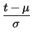
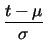

Algunas Propiedades Importantes
Como la función de distribución de probabilidad es simétrica, y además el área total acumulada, sobre toda la recta real es 1, entonces para cualquier x real se obtiene la siguiente propiedad:
Para finalizar este corto recorrido por la distribución normal invitamos al lector a seguir cuidadosamente las siguientes líneas.
Si X sigue una distribución normal con parámetros  y
y
 entonces si aplicamos el cambio de variable
=  a la integral en
entonces si aplicamos el cambio de variable
=  a la integral en

Ejemplo 26
Las notas finales de un curso se distribuyen en forma normal con una media de 75 y una desviación estándar de 10. Si la nota de aprobación es de 70 que porcentaje de los estudiantes aprobarán el curso.
Solución:
Primero se debe notar que la afirmación de que las notas siguen una distribución normal debe entenderse en el sentido aproximado.
El porcentaje solicitado puede obtenerse al encontrar el valor
P[X  70].
70].
Dadas las propiedades de las distribuciones de probabilidad se tiene que
Ejemplo 27
La distribución de peso de ciertos bultos de papel para reciclaje es normal con media de 50 kilos y desviación estándar de 10 kilos. La persona que transporta los paquetes cobra 100 colones por bulto pero desea imponer un peso máximo después del cual cobrar un recargo. Cuál debería ser ese peso para que los bultos tengan una probabilidad inferior al 10% de pagar tal recargo.
Solución
Hay dos aspectos importantes que se deben notar; el primero de ellos es que si X es la variable aleatoria para el peso de cada paquete lo que se debe encontrar es un valor r tal que:
lo que se reduce a encontrar un r que cumpla con:
El problema es inverso en el sentido de que no se busca una probabilidad, sino un valor que permita obtener cierta probabilidad.
El segundo aspecto que debe tenerse en cuenta es que para poder utilizar las barras de cálculo de que se dispone en estas notas o las tablas, la distribución de normalizarse en el sentido de 18.
La siguiente herramienta permite
resolver el problema indicado, a saber si se tiene una probabilidad p encontrar
el valor r tal que P[X  r] = p.
r] = p.
Uniendo ese par de observaciones se debe resolver:
 ]
] Utilizando en barra de asistencia la herramienta normal inversa se obtiene la ecuación:
= 1.286,
de donde r = 62.86.